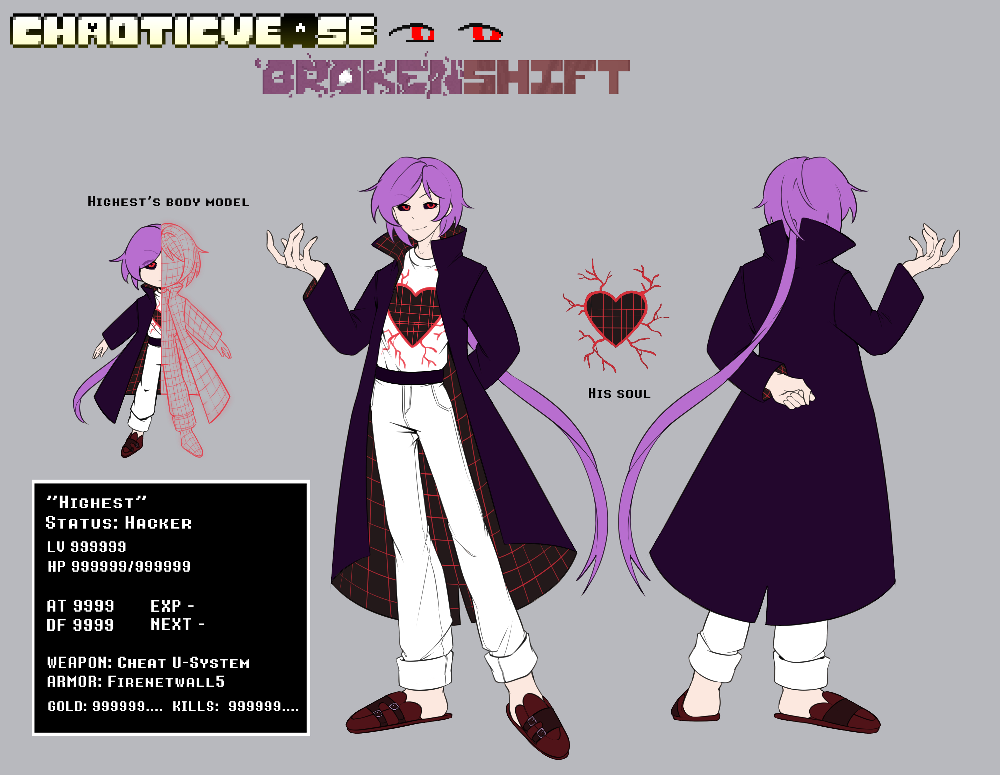
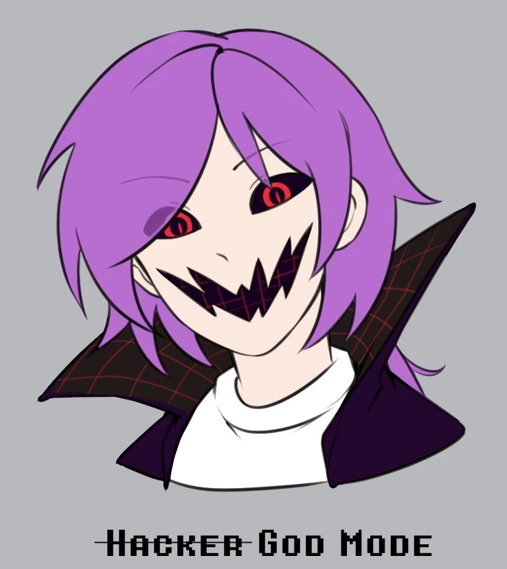
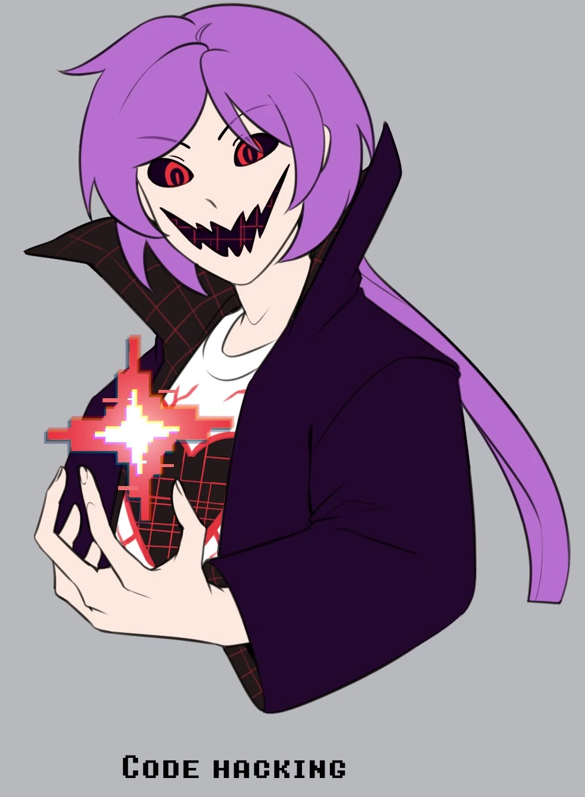
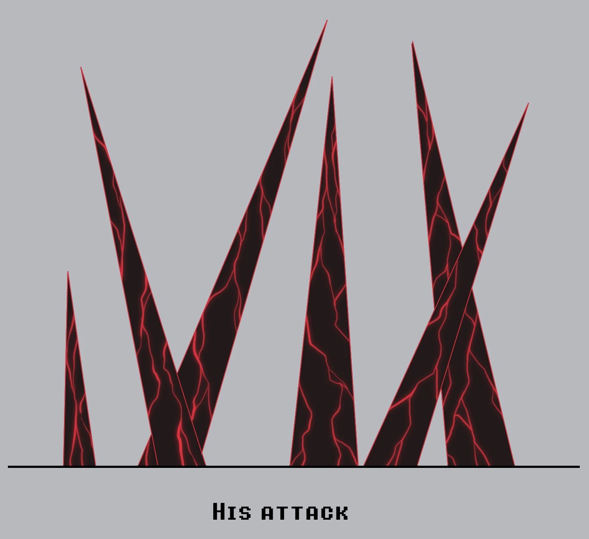
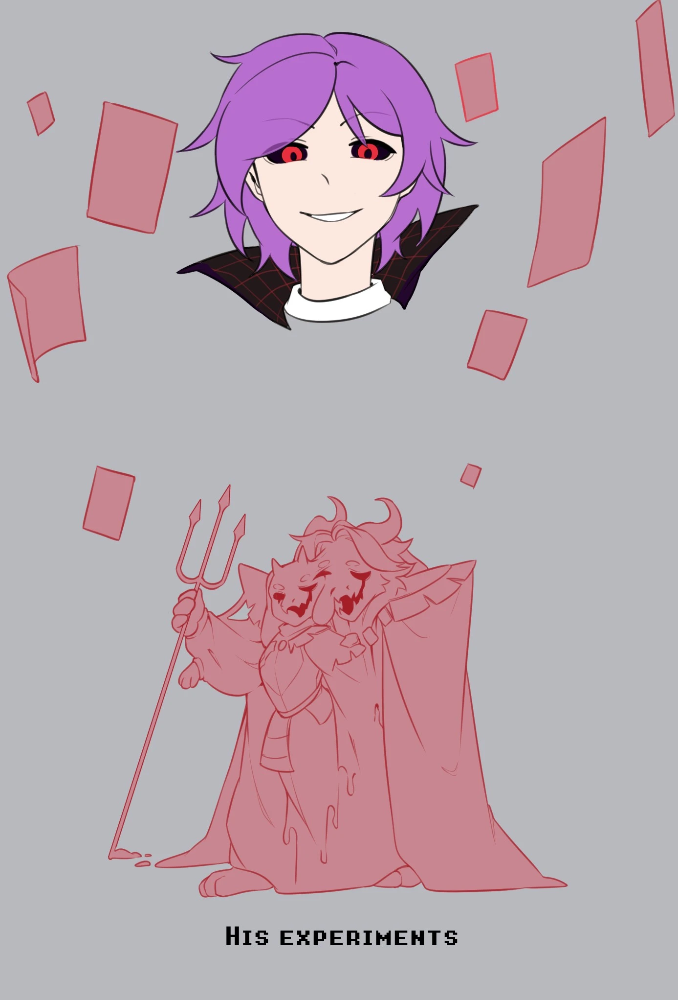
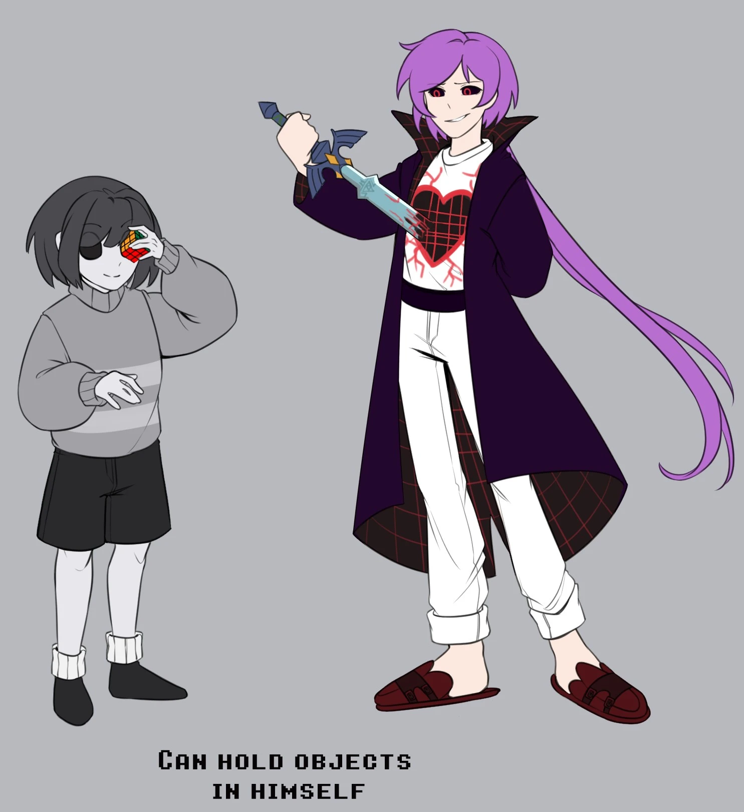

Высший — человек из реального мира, что считает себя богом и высшим существом. Персонажи — игрушки, вселенные — холсты,
мультивселенная — его поле экспериментов. Ты можешь его любить, ненавидеть, осуждать или простить. Но ему плевать на твои чувства и мысли.
Ты лишь очередная пешка его игры, даже если ты уже знаешь это.
Предыстория
Изначально он пытался создать свою собственную вселенную, но у него никогда ничего не получалось оригинального и интересного. После этого он решил
сделать тейк на одну вселенную, и людям понравилось его переосмысление. Так он начал обретать известность, поклонников и любителей его творчества. Но все это
служило пищей для его эго. Чем больше его работы любили, тем выше росло его самолюбие, пока оно не достигло абсолютного апогея, в котором он стал считать
себя гением, способным "улучшить" любую вселенную, не важно, популярная она или нет. Он всегда найдет тех, кто будет восхищаться им. Так он и назвал себя Высшим.
Высшим существом, никому неподвластное и способное на всё, что он пожелает.
Характер
Высший крайне самолюбив и эгоистичен. Он всегда считает себя лучшим и никогда не сомневается в своей правоте. Он крайне остро
реагирует на любую критику в свой адрес и либо не воспринимает ее всерьез, либо высмеивает ее. А любая похвала лишь усиливает его и так непомерное эго.
Не стоит и говорить, что слова любого жителя для него лишь пустой звук, который он не воспринимает и не учитывает. В попытках создать "идеальную" вселенную
он будет готов игнорировать любые рамки морали и законов, лишь бы добиться того самого, единственного идеала, который он видит. И даже если он совершит ошибки и будет осознавать,
что они произошли по его вине, он все равно будет убеждать себя в том, что так изначально и задумывал, не желая признавать свою недальновидность.
Единственные, кого он может считать равными себе — это такие же хакеры, которые тоже манипулируют кодом и творят что хотят. Но даже так, Высший не посмеет
назвать их друзьями. Скорее он будет считать их своими младшими, что не способны постичь его гения. Лишь один человек когда-то смог заслужить от него право зваться другом.
И он же его предал, что окончательно в нем подорвало, и так несильное, доверие к людям.
Внешность


Высший похож на человека, однако его тело лишь аватар, состоящий из кода и больше ничего. В нем нет ни фрагмента от реального человека.
Лучше всего это показывает его черно-красная душа, которая буквально часть его тела и занимает почти все пространство торса, а ее корни расходятся по телу.
Его прическа ярко-фиолетовая, с длинным заплетенным хвостиком. Глаза черные, а радужки красные. Носит белую футболку с белыми брюками, темно-фиолетовый пояс
и такого же цвета пальто, которое изнутри представляет собой черно-красную математическую сетку. На ногах носит красно-бордовые тапочки с застежками.
В моменты чрезвычайной агрессии или дикой эйфории, его лицо может исказиться: рот станет нечеловеческим и появятся хищные красные зрачки.
Способности
Взлом кода

Стандартная способность любого хакера, однако Высший продвинулся в искусстве хакинга настолько, что ему не составит труда взломать даже крайне защищенные системы и
перехватить управление над целыми сохранениями и таймлайнами любой вселенной. Взлом воспоминаний и личности персонажа для него не проблема, а просто разминка.
Атака

Технически, так как Высший является хакером, то он способен использовать любую игровую механику, что ему доступна, но среди любимых атак у него
черно-красные шипы, что также позволяют взламывать код. Появиться они могут где-угодно, Высшему нужно быть лишь достаточно
близко к цели или использовать максимум своих сил для атаки по большой области.
Красные листы

Красные листы представляют собой набор данных, сконвертированных в удобные документы, которые он может вызвать в любое доступное для себя время.
На части из них содержится техническая информация о разных вселенных, а также его планы на будущие миры.
Но основная их польза в том, что они могут хранить в себе любые данные. Даже персонажа. И Высший часто этим пользуется, храня в них свои эксперименты в
виде его творений амальгаметов. Большую часть он использует как свою боевую силу и личную армию.
Персональное хранилище

Подобно Кор!Фриск, которые могут использовать свои глаза как способ что-то хранить, так и Высший использует свою душу в качестве удобного хранилища
любой всячены.
Дополнительная информация
- Высший создал вселенную Brokenshift.
- Игрок — главный враг Высшего, а также его бывший друг. Не смотря на их вражду, Высший все еще питает к нему теплые чувства,
но пытается убедить себя в обратном.
- Даже со всеми своими способностями, Высший все еще не может попасть в Омега Таймлайн. Он длительное время пытается это сделать, но пока безрезультатно.
- Высшего нельзя полностью уничтожить. Только временно закрыть ему доступ к мультивселенной. Единственный способ победы над ним — заставить его скучать.
- Высший выбрал себе такую внешность, вдохновившись образом одного аниме персонажа.
- Высшего можно по праву считать квалифицированным специалистом в программировании и переписывании чужого кода.
- Он ненавидит подражателей.